yolo_v1¶
论文地址：《You Only Look Once: Unified, Real-Time Object Detection》
YOLO把目标检测作为一个回归问题，直接从输入的图片中预测出边界框和类别概率。
算法优点¶
- 速度快。在Titan X GPU上的速度为45fps，加速版的yolo可达150fps。
- 基于图像的全局信息进行预测。这点和基于sliding window,region proposal等检测算法不同。与Fast R-CNN相比，yolo在误检测（将背景检测为物体）方面的错误率能降低一半多。
- 可以学习物体的泛化表示。
检测系统¶
YOLO检测系统如下图：
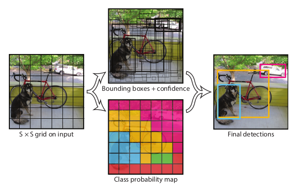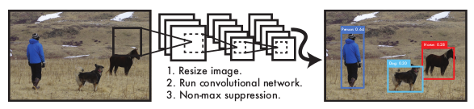1. 将图片resize成 \(448 \times 448\) 大小
2. 将图片分成 \(S \times S\) 个 grid cell。如果一个物体的中心落在这个网格单元中，那么这个网格将负责检测这个物体
3. 每个 grid cell 预测 \(B\) 个 bounding boxes 和对应的 confidence scores
- confidence
注解
若预测 cell 中存在 object ，则 \(Pr(Object)\) 为 cell 中存在 object 的概率， \(IOU_{pred}^{truth}\) 为预测框与真实框的交并比，confidence 为两者乘积； 若预测 cell 中不存在 object ，则 \(Pr(Object)\) 为0，confidence 为0
4. 每个 bounding box 有5个预测值 \(x\), \(y\), \(w\), \(h\) , and confidence
- \((x,y)\)
- bounding box 的中心点相对于 grid cell 左上角的偏移
- \((w,h)\)
- bounding box 的相对于整个 image 的宽，高
examples:
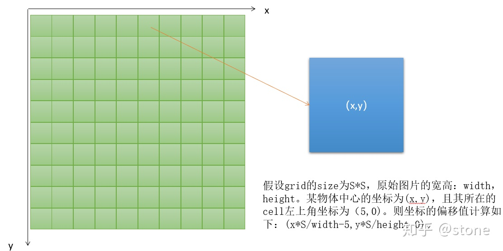 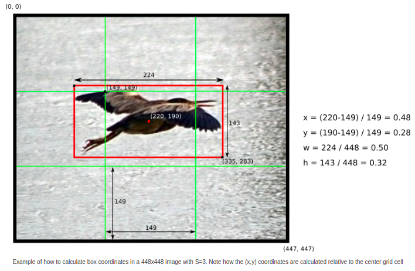5. 每个 grid cell 同时预测 \(C\) 个条件类别概率 \(Pr(Class_{i}|Object)\)
注解
这一系列条件类别概率与 bounding boxes 的数量 \(B\) 无关
class-specific confidence scores for each box
\[Pr(Class_{i}|Object) * Pr(Object) * IOU_{pred}^{truth}\]在测试阶段，我们使用 class-specific confidence score 来反应该 bounding box 中出现的类别概率及预测框与目标框的匹配度
根据上述过程可知，整个图像的预测最终将构成一个 \(S \times S \times (B * 5 + C)\) 的张量。我们使用PASCAL VOC来评估YOLO， \(S = 7, B = 2, C = 20\) 。
注解
"5"代表每个 bounding box 有5个预测值
网络设计¶
YOLO网络由24个卷积层和2个全连接层构成。完整网络如下图，初始卷积层从图像中提取特征，而全连接层输出概率和坐标，最终输出是 7*7*30 张量的预测。
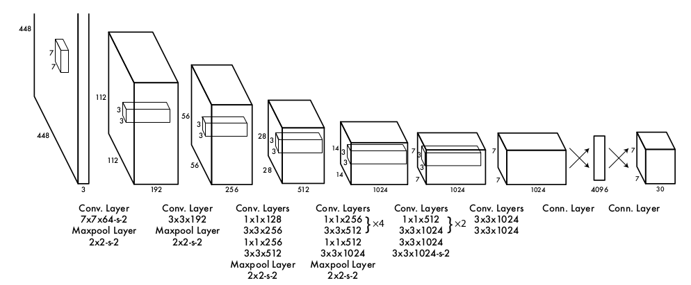网络每层输入输出
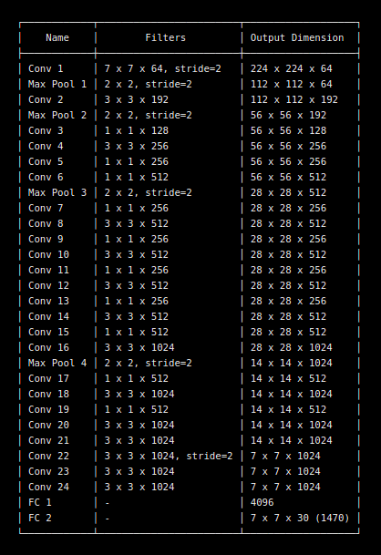为什么448*448*3经过第一层卷积后输出的是244*244*64？
根据 yolo.cfg，第一个卷积层的pad=1，表明卷积时需要进行zero padding，padding的个数与卷积核尺寸有关，为size/2向下取整，如3/2=1
输入和输出的映射关系
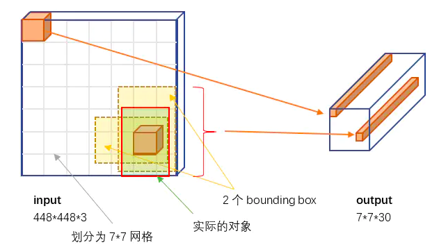30维向量
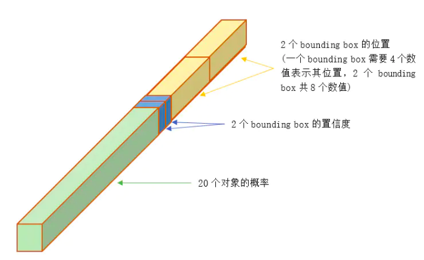
训练过程¶
预训练
在ImageNet上使用上图中前20个卷积网络加上一个平均池化层和全连接层进行训练
训练
用预训练得到的前20个卷积网络参数来初始化YOLO模型前20个卷积层的网络参数，加上随机初始化的4个卷积层和2个全连接层，同时输入分辨率从224*224变为448*448。最后一层激活函数为线性激活函数，其他层的激活函数为leaky，然后用PASCAL VOC 标注数据进行YOLO模型训练。训练中采用了 drop out 和数据增强来防止过拟合。
损失函数
YOLO是 end to end 训练，对于预测框的位置，size，种类，置信度(confidence score)等信息都通过一个损失函数来训练。损失就是网络实际输出与样本标签之间的偏差 [1]。
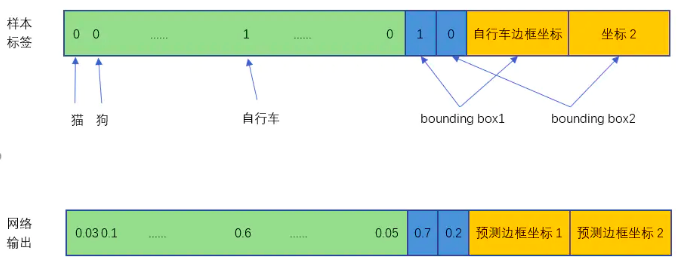
采用了 sum-squared error loss，8维的 localization error 和 20维的 classification error 同等重要显然是不合理的，因此赋予了更大的 loss weight \(\lambda_{coord} = 5\)
对于没有 object 的 box 的 confidence loss, 赋予小的 loss weight \(\lambda_{noobj} = 0.5\)
\[\begin{split}\lambda_{coord}\sum_{i=0}^{S^2}\sum_{j=0}^B\mathbb{1}_{ij}^{obj}[(x_{i} - \hat{x}_{i})^2 + (y_{i} - \hat{y}_{i})^2]\\ + \lambda_{coord}\sum_{i=0}^{S^2}\sum_{j=0}^B\mathbb{1}_{ij}^{obj}[( \sqrt{w_{i}} - \sqrt{\hat{w}_{i}} )^2 + ( \sqrt{h_{i}} - \sqrt{\hat{h}_{i}} )^2]\\ + \sum_{i=0}^{S^2}\sum_{j=0}^B\mathbb{1}_{ij}^{obj} (C_{i} - \hat{C}_{i})^2\\ + \lambda_{noobj} \sum_{i=0}^{S^2}\sum_{j=0}^B\mathbb{1}_{ij}^{noobj} (C_{i} - \hat{C}_{i})^2\\ + \sum_{i=0}^{S^2} \mathbb{1}_{i}^{obj} \sum_{c \in classes} (p_{i}(c) - \hat{p}_{i}(c))^2\end{split}\]
- 对象分类的误差
- 公式第5行，只有存在对象的 grid cell 才计入误差
- bounding box 位置误差
- 公式第1行和第2行，只有“负责”(IOU较大)预测的那个 bounding box 的数据才会计入误差。第2行宽度和高度先取了平方根，因为如果直接取差值的话，大的对象对差值的敏感度较低，小的对象对差值的敏感度较高，所以取平方根可以降低这种敏感度的差异，使得较大的对象和较小的对象在尺寸误差上有相似的权重。
- bounding box 置信度误差
- 公式第3行和第4行，第3行是存在对象的 bounding box的置信度误差。只有“负责”预测的那个 bounding box 的置信度才会计入误差。第4行是不存在对象的bounding box的置信度误差。因为不存在对象的bounding box应该老老实实的说"我这里没有对象"，也就是输出尽量低的置信度。如果它不恰当的输出较高的置信度，会与真正"负责"该对象预测的那个 bounding box产生混淆。其实就像对象分类一样，正确的对象概率最好是1，所有其它对象的概率最好是0。
注解
\(\mathbb{1}_{i}^{obj}\) 表示 cell \(i\) 中是否有 object， \(\mathbb{1}_{ij}^{obj}\) 表示在 cell \(i\) 中的第 \(j\) 个 bounding box 负责预测该 object, 只有当某个 grid cell 中有 object 的时候才对 classification error 进行惩罚。只有当某个 box predictor 对某个ground truth box 负责的时候，才会对 box 的 coordinate error 进行惩罚。
推理过程¶
在 PASCAL VOC 数据集上，YOLO网络对于每张图片共预测98个 bounding box及20个类别 for each box。
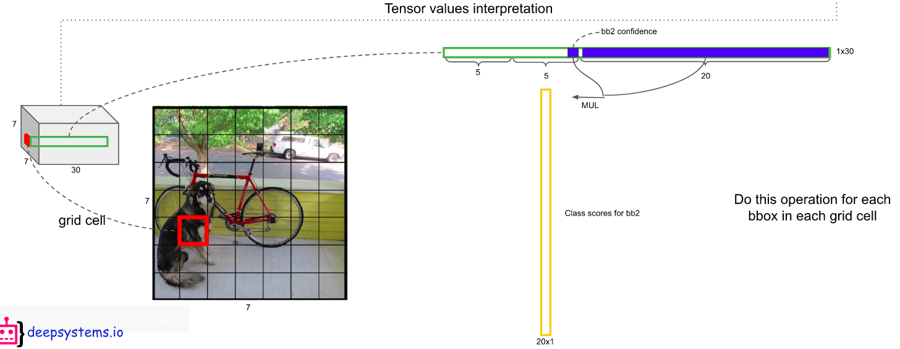每个 grid cell 有30个预测值，前5个为 bounding box 1 (bb1)的预测值，后5个为bb2的预测值，20为class score。按照如图所示的方法可得到 class scores for each bounding box [2]。
以 Dog class 为例，每个bounding box 都有一个针对该类别的 score ，当 score 小于 cofidence 时，该 bounding box 的值更新为0，按照 score 的 大小对 bb 排序，应用NMS，选取每个 bounding box 最大的 score (if > 0)类别，最终获得整个图像所有的预测框。
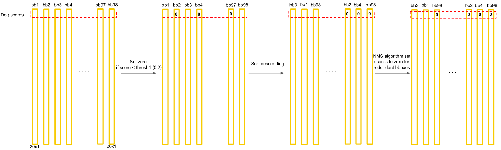小技巧
总体思路：对每一个类别的98个 bounding box，根据置信度和NMS，筛选出一个或多个预测框，最终预测框中得分最高的score 为预测类别。NMS主要解决的是一个目标被多次检测的问题。
局限性¶
- 针对集中出现的小目标和邻近的目标检测精确度不高
- 很难在新的或不寻常的宽高比或配置中的对象中进行泛化
- 由于损失函数的原因，定位误差是影响检测效果的主要原因